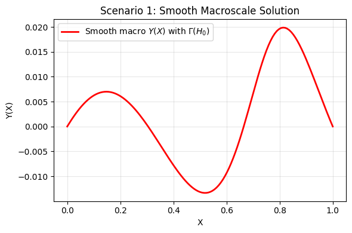
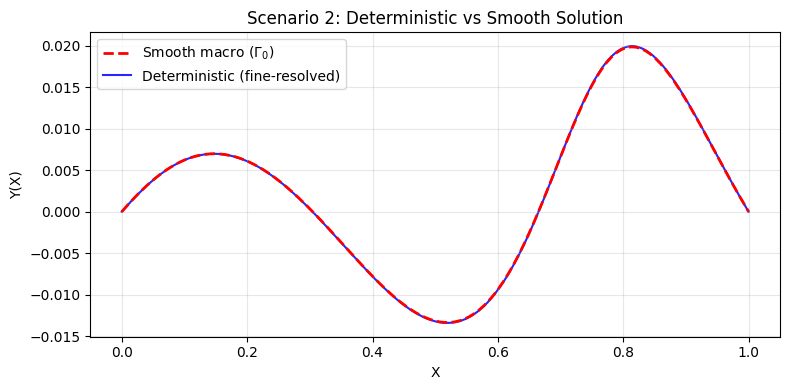
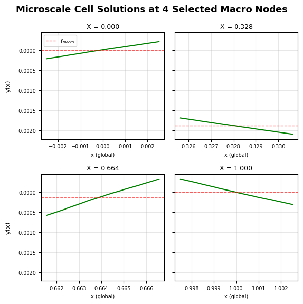
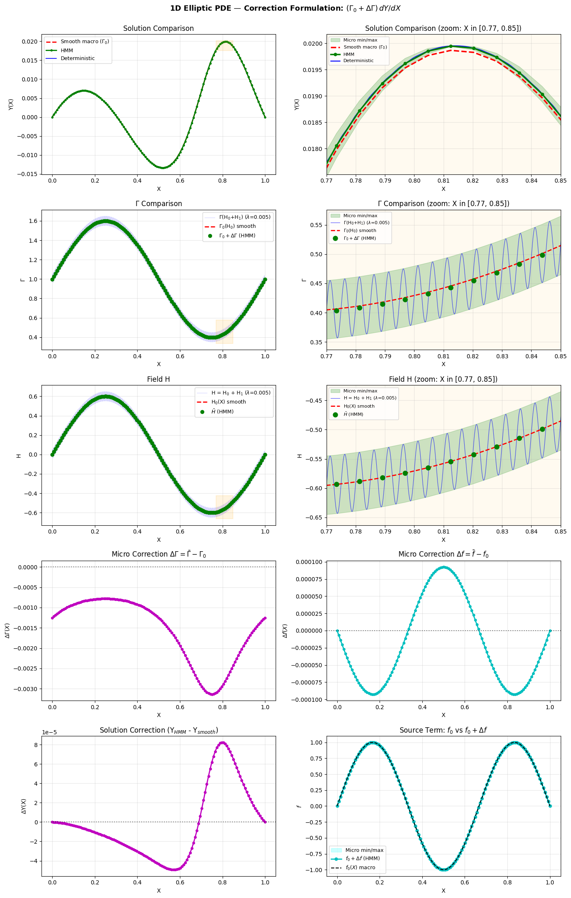

LAMBDA = 0.005 # Micro-scale length scale
PHI = 0.0 # Micro-scale phase offset
A_H0 = 0.6 # Amplitude of smooth field H0(X) = A_H0 * sin(2*pi*X)
A_H1 = 0.05 # Amplitude of microscale field H1
F_AMP = 1.0 # Amplitude of source term
L = 1.0 # Macroscale domain length
N_MACRO = 128 # Macro mesh elements (coarse)
N_FINE = 2000 # Fine mesh elements to resolve the microscale features in the deterministic model
N_MICRO = 64 # Micro mesh elements
MAX_HMM_ITER = 50 # Maximum HMM coupling iterations
HMM_TOL = 1e-6 # Convergence tolerance for HMM iterationGeneric 1D HMM for an elliptic multiscale problem
HMM
homogenisation
FEniCS
The Heterogeneous Multiscale Method on a 1D elliptic boundary-value problem: a smooth macro baseline, a fine-resolved reference, and HMM coupling through micro cell problems that feed effective coefficients back to the macro solve.
Published
June 1, 2026
This notebook demonstrates the Heterogeneous Multiscale Method (HMM) on a clean model problem — the 1D elliptic equation
\[ -\frac{d}{dX}\!\left(\Gamma(H)\,\frac{dY}{dX}\right) = f(X), \qquad Y(0)=Y(L)=0, \]
where the coefficient \(\Gamma\) carries a fast microscale oscillation \(H = H_0(X) + H_1(x/\lambda,\phi)\). Three scenarios are compared: a smooth macro solve using only \(H_0\); a fine-resolved deterministic solve that resolves every microscale wiggle; and the HMM solve, where micro cell problems supply effective \(\bar\Gamma\) and \(\bar f\) that correct a coarse macro solve. The HMM result should track the expensive fine-resolved reference at a fraction of the cost.
TipRunning it yourself
Colab is the smoothest route — the notebook’s first cell installs FEniCS automatically (via fem-on-colab) on a real cloud kernel; just run all cells. Binder builds the environment from binder/environment.yml and needs no login, but the legacy-FEniCS image is heavy, so the first launch can take several minutes while it builds.
The full notebook is embedded below (install cell and console logs trimmed for reading; the runnable version is linked above).
Heterogeneous Multiscale Methods (HMM) Demonstration
1D elliptic PDE demonstration using FEniCS, implementing the HMM framework and comparing with a high resolution deterministic model and a smooth single scale model.
The governing equation has the form:
\[\frac{d}{dX} \left[ \Gamma \frac{dY}{dX} \right] = F\]
where \(\Gamma = g(H, Y, \frac{dY}{dX})\), \(F = f(H, Y, \frac{dY}{dX})\) are general functions of a field \(H\), the solution \(Y\), and the gradient \(\frac{dY}{dX}\).
Three scenarios:
- Smooth macroscale — Property field \(H = H_0(X)\) only (no fine-scale features), solved on a coarse mesh.
- Deterministic — Field \(H = H_0(X) + H_1(X, \lambda, \phi)\) now includes fine-scale features or noise, solved on a fine mesh.
- HMM coupled multiscale — Macro-scale solved with homogenised micro solutions providing effective \(\bar{\Gamma}\) and \(\bar{F}\).
Imports and Setup
Physical Parameters
Problem dimensions, mesh resolutions, and HMM settings.
Field Definitions
- \(H_0(X) = A_{H_0} \sin(2\pi X)\) — smooth macro
- \(H_1(x, \lambda, \phi) = A_{H_1} \sin(2\pi x / \lambda + \phi)\) — fine-scale perturbation
Constitutive Relations for diffusion and source terms: \(\Gamma(H, Y, dY/dX)\) and \(F(H, Y, dY/dX)\)
These are the functions used at both macro and micro scales. For this example, \(\Gamma\) is dependent on \(H\). We could make it fully nonlinear problem by adding \(Y\) and \(dY/dX\) dependence in both \(\Gamma\) and \(F\).
FEniCS Expressions
Custom classes for evaluating \(\Gamma\) and \(f\) at quadrature points.
class SmoothGamma(UserExpression):
"""Gamma using only H0: Gamma(H0(X)) = 1 + H0(X)"""
def eval(self, values, x):
H0 = H0_func(x[0])
values[0] = Gamma_func(H0)
def value_shape(self):
return ()
class FullGamma(UserExpression):
"""Gamma using full H = H0 + H1: Gamma(H(X)) = 1 + H0(X) + H1(X, lambda, phi)"""
def eval(self, values, x):
H = H0_func(x[0]) + H1_func(x[0], LAMBDA, PHI)
values[0] = Gamma_func(H)
def value_shape(self):
return ()
class SourceExpression(UserExpression):
"""Source term: f(X) = F_AMP * sin(3*pi*X)"""
def eval(self, values, x):
values[0] = f_source_func(x[0])
def value_shape(self):
return ()Unified FEM Solver
A single solver function used for all scenarios — only the \(\Gamma\) expression and mesh resolution change.
def solve_fem(gamma_expr, n_elements, label="FEM"):
"""
Solve the 1D elliptic BVP using FEM:
d/dX [ Gamma * dY/dX ] = f on [0, L]
Y(0) = Y(L) = 0
Same solver for all scenarios — only the Gamma expression and mesh change.
"""
print(f" {label}")
# 1D Mesh with continuous Galerkin elements
mesh = IntervalMesh(n_elements, 0.0, L)
V = FunctionSpace(mesh, "CG", 1)
def boundary(x, on_boundary):
return on_boundary
#Fixed dirichlet conditions on the boundaries
bc = DirichletBC(V, Constant(0.0), boundary)
u = TrialFunction(V)
v = TestFunction(V)
f = SourceExpression(degree=2)
a_form = gamma_expr * dot(grad(u), grad(v)) * dx
L_form = f * v * dx
u_h = Function(V)
solve(a_form == L_form, u_h, bc)
coords = mesh.coordinates().flatten()
idx = np.argsort(coords)
coords = coords[idx]
vals = u_h.compute_vertex_values(mesh)[idx]
print(f" Mesh elements: {n_elements}")
print(f" Solution range: [{vals.min():.6f}, {vals.max():.6f}]")
print()
return coords, valsScenario 1: Smooth Macroscale Problem
Field \(H = H_0(X)\) only (no micro features). Solved on a coarse macro mesh.
# --- Plot: Smooth macroscale solution ---
coords_s, vals_s = smooth_data
fig, ax = plt.subplots(figsize=(6, 4))
ax.plot(coords_s, vals_s, 'r-', linewidth=2, label=r'Smooth macro $Y(X)$ with $\Gamma(H_0)$')
ax.set_xlabel('X')
ax.set_ylabel('Y(X)')
ax.set_title('Scenario 1: Smooth Macroscale Solution')
ax.legend()
ax.grid(True, alpha=0.3)
plt.tight_layout()
plt.show()
Scenario 2: Deterministic Problem (High resolution)
Property field \(H = H_0(X) + H_1(X, \lambda, \phi)\) with fine-scale texture. Solved on a fine mesh that resolves all oscillations.
# --- Plot: Deterministic vs Smooth ---
coords_s, vals_s = smooth_data
coords_f, vals_f = fine_data
fig, ax = plt.subplots(figsize=(8, 4))
ax.plot(coords_s, vals_s, 'r--', linewidth=2,
label=r'Smooth macro ($\Gamma_0$)', zorder=2)
ax.plot(coords_f, vals_f, 'b-', alpha=0.85, linewidth=1.5,
label='Deterministic (fine-resolved)', zorder=1)
ax.set_xlabel('X')
ax.set_ylabel('Y(X)')
ax.set_title('Scenario 2: Deterministic vs Smooth Solution')
ax.legend()
ax.grid(True, alpha=0.3)
plt.tight_layout()
plt.show()
Scenario 3: HMM
Micro/Cell Problem Solver
Solves the micro problem on a representative microscale cell \([-\lambda/2, \lambda/2]\) for each macro node.
Boundary conditions: - \(y(\lambda/2) = y(-\lambda/2) + \lambda \, dY/dX\) (periodic offset) - \(\Gamma \, dy/dx(-\lambda/2) = \Gamma \, dy/dx(\lambda/2)\) (periodic flux) - \(y(0) = Y\) (centre constraint)
Returns homogenised \(\bar{\Gamma}\), \(\bar{f}\), and \(\bar{H}\) to the macro scale.
def solve_micro_cell_problem(X_macro, Y_macro, dYdX_macro):
"""
Solve the micro/cell problem on a representative cell.
Domain: [-lambda/2, lambda/2]
PDE: d/dx [ gamma * dy/dx ] = f_micro
Returns
-------
Gamma_bar : float
Effective Gamma over the cell.
f_bar : float
Homogenised source term over the cell.
H_bar : float
Homogenised property field over the cell.
micro_info : dict
Min/max of y, gamma, f, and h from the micro solution.
"""
half_lam = LAMBDA / 2.0
micro_mesh = IntervalMesh(N_MICRO, -half_lam, half_lam)
V_micro = FunctionSpace(micro_mesh, "CG", 1)
# Field on the micro domain
H0_val = H0_func(X_macro)
class MicroPropertyField(UserExpression):
"""h(x) = H0(X_macro) + H1(x, lambda, phi)"""
def eval(self, values, x):
values[0] = H0_val + H1_func(x[0], LAMBDA, PHI)
def value_shape(self):
return ()
h_expr = MicroPropertyField(degree=2)
class MicroGamma(UserExpression):
"""gamma(x) = Gamma(h(x)) = 1 + h(x)"""
def eval(self, values, x):
h = H0_val + H1_func(x[0], LAMBDA, PHI)
values[0] = Gamma_func(h)
def value_shape(self):
return ()
gamma_micro = MicroGamma(degree=2)
class MicroSource(UserExpression):
"""f_micro(x) = f(X_macro + x)"""
def eval(self, values, x):
values[0] = f_source_func(X_macro + x[0])
def value_shape(self):
return ()
f_micro = MicroSource(degree=2)
# Boundary conditions with the offset periodicity
y_left = Y_macro - dYdX_macro * half_lam
y_right = Y_macro + dYdX_macro * half_lam
def left_boundary(x, on_boundary):
return on_boundary and near(x[0], -half_lam)
def right_boundary(x, on_boundary):
return on_boundary and near(x[0], half_lam)
bc_left = DirichletBC(V_micro, Constant(y_left), left_boundary)
bc_right = DirichletBC(V_micro, Constant(y_right), right_boundary)
bcs = [bc_left, bc_right]
# Solve: d/dx [ gamma * dy/dx ] = f_micro
w = TrialFunction(V_micro)
v = TestFunction(V_micro)
a_form = gamma_micro * dot(grad(w), grad(v)) * dx
L_form = f_micro * v * dx
y_h = Function(V_micro)
solve(a_form == L_form, y_h, bcs)
# --- Homogenisation ---
gamma_projected = project(gamma_micro, V_micro)
f_projected = project(f_micro, V_micro)
h_projected = project(h_expr, V_micro)
# Gamma_bar: harmonic mean
inv_gamma = project(Constant(1.0) / gamma_projected, V_micro)
avg_inv_gamma = assemble(inv_gamma * dx) / LAMBDA
Gamma_bar = 1.0 / avg_inv_gamma
# f_bar = (1/lambda) * integral f_micro dx
f_bar = assemble(f_projected * dx) / LAMBDA
# H_bar = (1/lambda) * integral h dx
H_bar = assemble(h_projected * dx) / LAMBDA
# --- Extract min/max from micro solution for plotting ---
y_vals = y_h.compute_vertex_values(micro_mesh)
gamma_vals = gamma_projected.compute_vertex_values(micro_mesh)
f_vals = f_projected.compute_vertex_values(micro_mesh)
h_vals = h_projected.compute_vertex_values(micro_mesh)
micro_coords = micro_mesh.coordinates().flatten()
micro_sort = np.argsort(micro_coords)
micro_coords_sorted = micro_coords[micro_sort] + X_macro
micro_y_sorted = y_vals[micro_sort]
micro_info = {
'y_min': y_vals.min(), 'y_max': y_vals.max(),
'gamma_min': gamma_vals.min(), 'gamma_max': gamma_vals.max(),
'f_min': f_vals.min(), 'f_max': f_vals.max(),
'h_min': h_vals.min(), 'h_max': h_vals.max(),
'micro_coords': micro_coords_sorted,
'micro_y': micro_y_sorted,
}
return Gamma_bar, f_bar, H_bar, micro_infoHMM Coupled Multiscale Solver
Iterative coupling between macro and micro scales using the correction formulation:
\[\frac{d}{dX} \left[ (\Gamma_0 + \Delta\Gamma) \frac{dY}{dX} \right] = (F_0 + \Delta F)\]
where \(\Gamma_0 = \Gamma(H_0)\) and \(F_0 = F(X)\) are the smooth baseline, and the corrections are:
\[\Delta\Gamma_i = \bar{\Gamma}_i - \Gamma_0(X_i), \qquad \Delta F_i = \bar{F}_i - F_0(X_i)\]
Algorithm: 1. Initial macro solve with smooth \(\Gamma_0\), \(f_0\) to get \(Y\), \(dY/dX\). 2. At every macro node, solve a micro cell problem → \(\bar{\Gamma}\), \(\bar{F}\). 3. Compute corrections: \(\Delta\Gamma = \bar{\Gamma} - \Gamma_0\), \(\Delta F = \bar{F} - F_0\). 4. Re-solve macro with \((\Gamma_0 + \Delta\Gamma)\) and \((F_0 + \Delta F)\). 5. Iterate until convergence.
def solve_hmm_multiscale():
"""
HMM coupled multiscale solver using the correction formulation:
d/dX [ (Gamma_0 + Delta_Gamma) dY/dX ] = (f_0 + Delta_f)
Micro solves provide Gamma_bar and f_bar; the corrections are:
Delta_Gamma = Gamma_bar - Gamma_0(X)
Delta_f = f_bar - f_0(X)
Returns HMM solution, initial smooth solution,
correction, homogenised quantities, delta arrays, and micro info.
"""
print("SCENARIO 3: HMM coupled multiscale")
macro_mesh = IntervalMesh(N_MACRO, 0.0, L)
V_macro = FunctionSpace(macro_mesh, "CG", 1)
def boundary(x, on_boundary):
return on_boundary
bc = DirichletBC(V_macro, Constant(0.0), boundary)
u_trial = TrialFunction(V_macro)
v_test = TestFunction(V_macro)
# --- Smooth baseline expressions (constant throughout) ---
gamma_smooth = SmoothGamma(degree=2)
f_macro_expr = SourceExpression(degree=2)
# --- Step 1: Initial macro solve with smooth Gamma(H0) ---
print(" Step 1: Initial macro solve (smooth Gamma_0, f_0)...")
a_form = gamma_smooth * dot(grad(u_trial), grad(v_test)) * dx
L_form = f_macro_expr * v_test * dx
u_macro = Function(V_macro)
solve(a_form == L_form, u_macro, bc)
# Store the initial smooth solution for computing correction later
u_smooth_initial = Function(V_macro)
u_smooth_initial.vector()[:] = u_macro.vector()[:]
# Get sorted macro node coordinates and mapping
macro_coords = macro_mesh.coordinates().flatten()
sort_idx = np.argsort(macro_coords)
macro_coords_sorted = macro_coords[sort_idx]
n_nodes = len(macro_coords_sorted)
v2d = vertex_to_dof_map(V_macro)
# Evaluate smooth-scale quantities at macro nodes (fixed reference)
Gamma0_at_nodes = np.array([Gamma_func(H0_func(x)) for x in macro_coords_sorted])
f0_at_nodes = np.array([f_source_func(x) for x in macro_coords_sorted])
# --- Iteration loop ---
converged_iter = MAX_HMM_ITER
micro_info_all = None
Delta_Gamma_nodal = None
Delta_f_nodal = None
for hmm_iter in range(MAX_HMM_ITER):
print(f"\n --- HMM Iteration {hmm_iter + 1} ---")
print(f" Step 2: Solving {n_nodes} micro cell problems...")
Gamma_bar_nodal = np.zeros(n_nodes)
f_bar_nodal = np.zeros(n_nodes)
H_bar_nodal = np.zeros(n_nodes)
micro_info_list = []
for i, x_node in enumerate(macro_coords_sorted):
Y_macro = u_macro(Point(x_node))
# Compute macro gradient at this node via finite difference
delta = 0.5 * (L / N_MACRO)
x_left = max(0.0, x_node - delta)
x_right = min(L, x_node + delta)
dYdX_macro = (u_macro(Point(x_right)) - u_macro(Point(x_left))) / \
(x_right - x_left)
Gamma_bar, f_bar, H_bar, micro_info = solve_micro_cell_problem(
x_node, Y_macro, dYdX_macro)
Gamma_bar_nodal[i] = Gamma_bar
f_bar_nodal[i] = f_bar
H_bar_nodal[i] = H_bar
micro_info_list.append(micro_info)
if i % 8 == 0 or i == n_nodes - 1:
print(f" Node {i:3d}/{n_nodes-1}: X={x_node:.4f}, "
f"Y={Y_macro:+.4f}, dY/dX={dYdX_macro:+.4f}, "
f"Gbar={Gamma_bar:.4f}, fbar={f_bar:+.4f}, "
f"Hbar={H_bar:+.4f}")
micro_info_all = micro_info_list
# --- Step 3: Compute corrections Delta_Gamma, Delta_f ---
Delta_Gamma_nodal = Gamma_bar_nodal - Gamma0_at_nodes
Delta_f_nodal = f_bar_nodal - f0_at_nodes
print(" Step 3: Computing corrections from micro results...")
print(f" Delta_Gamma range: [{Delta_Gamma_nodal.min():+.6f}, "
f"{Delta_Gamma_nodal.max():+.6f}]")
print(f" Delta_f range: [{Delta_f_nodal.min():+.6f}, "
f"{Delta_f_nodal.max():+.6f}]")
# Assign corrections to FEniCS Functions
Delta_Gamma_func = Function(V_macro)
Delta_f_func = Function(V_macro)
for i_sorted, i_orig in enumerate(sort_idx):
dof_idx = v2d[i_orig]
Delta_Gamma_func.vector()[dof_idx] = Delta_Gamma_nodal[i_sorted]
Delta_f_func.vector()[dof_idx] = Delta_f_nodal[i_sorted]
# --- Step 4: Re-solve macro with (Gamma_0 + Delta_Gamma), (f_0 + Delta_f) ---
print(" Step 4: Macro re-solve with (Gamma_0 + Delta_Gamma) "
"and (f_0 + Delta_f)...")
a_form_eff = (gamma_smooth + Delta_Gamma_func) * \
dot(grad(u_trial), grad(v_test)) * dx
L_form_eff = (f_macro_expr + Delta_f_func) * v_test * dx
u_new = Function(V_macro)
solve(a_form_eff == L_form_eff, u_new, bc)
# --- Check convergence ---
diff = u_new.vector()[:] - u_macro.vector()[:]
residual = np.sqrt(np.sum(diff**2))
u_norm = np.sqrt(np.sum(u_macro.vector()[:]**2))
rel_change = residual / max(u_norm, 1e-14)
print(f" Convergence: ||dY|| = {residual:.2e}, "
f"||dY||/||Y|| = {rel_change:.2e}")
u_macro.vector()[:] = u_new.vector()[:]
if rel_change < HMM_TOL:
converged_iter = hmm_iter + 1
print(f" *** Converged after {converged_iter} iteration(s) ***")
break
else:
converged_iter = MAX_HMM_ITER
print(f" *** Warning: did not converge in {MAX_HMM_ITER} iterations ***")
print("\n Step 5: Computing additive correction...")
delta_u = Function(V_macro)
delta_u.vector()[:] = u_macro.vector()[:] - u_smooth_initial.vector()[:]
coords = macro_coords_sorted
vals_hmm = u_macro.compute_vertex_values(macro_mesh)[sort_idx]
vals_smooth = u_smooth_initial.compute_vertex_values(macro_mesh)[sort_idx]
vals_correction = delta_u.compute_vertex_values(macro_mesh)[sort_idx]
print(f" Macro nodes: {n_nodes} (= {N_MACRO} elements + 1)")
print(f" Micro solves: {n_nodes} x {converged_iter} iterations = "
f"{n_nodes * converged_iter} total")
print(f" HMM solution range: [{vals_hmm.min():.6f}, {vals_hmm.max():.6f}]")
print(f" Max additive correction: {np.max(np.abs(vals_correction)):.6f}")
print()
return (coords, vals_hmm, vals_smooth, vals_correction,
macro_coords_sorted, Gamma_bar_nodal, f_bar_nodal, H_bar_nodal,
micro_info_all, Delta_Gamma_nodal, Delta_f_nodal,
Gamma0_at_nodes, f0_at_nodes)Run HMM Coupled Multiscale Solver
# --- Plot: 10 selected microscale solutions ---
coords_h, vals_hmm, vals_smooth, vals_corr, x_nodes, \
Gamma_bar, f_bar, H_bar, micro_info_all, \
Delta_Gamma, Delta_f, Gamma0_nodes, f0_nodes = hmm_data
n_micros = len(micro_info_all)
# Select 10 evenly spaced micro problems to display
selected_indices = np.linspace(0, n_micros - 1, 4, dtype=int)
fig, axes = plt.subplots(2, 2, figsize=(6, 6), sharey=True)
fig.suptitle('Microscale Cell Solutions at 4 Selected Macro Nodes',
fontsize=13, fontweight='bold')
for ax_idx, mi in enumerate(selected_indices):
ax = axes.flat[ax_idx]
info = micro_info_all[mi]
mc = info['micro_coords']
my = info['micro_y']
X_node = x_nodes[mi]
ax.plot(mc, my, 'g-', linewidth=1.5)
ax.axhline(y=vals_hmm[mi], color='r', linestyle='--', alpha=0.6,
linewidth=1, label='$Y_{macro}$' if ax_idx == 0 else None)
ax.set_title(f'X = {X_node:.3f}', fontsize=9)
ax.set_xlabel('x (global)', fontsize=7)
ax.tick_params(labelsize=7)
ax.grid(True, alpha=0.3)
axes[0, 0].set_ylabel('y(x)', fontsize=9)
axes[1, 0].set_ylabel('y(x)', fontsize=9)
axes[0, 0].legend(fontsize=7, loc='best')
plt.tight_layout()
plt.show()
Error Summary
Comparison of HMM solution against the high-resolution deterministic reference.
coords_h, vals_hmm, vals_smooth, vals_corr, x_nodes, \
Gamma_bar, f_bar, H_bar, micro_info_all, \
Delta_Gamma, Delta_f, Gamma0_nodes, f0_nodes = hmm_data
coords_f, vals_f = fine_data
print("ERROR SUMMARY")
fine_on_macro = np.interp(coords_h, coords_f, vals_f)
l2_err_hmm = np.sqrt(np.mean((vals_hmm - fine_on_macro)**2))
linf_err_hmm = np.max(np.abs(vals_hmm - fine_on_macro))
print(f" HMM vs fine-resolved FEM:")
print(f" L2 error: {l2_err_hmm:.6e}")
print(f" Linf error: {linf_err_hmm:.6e}")Plotting
from matplotlib.patches import Rectangle
coords_s, vals_s = smooth_data
# Extract micro min/max arrays
y_micro_min = np.array([m['y_min'] for m in micro_info_all])
y_micro_max = np.array([m['y_max'] for m in micro_info_all])
gamma_micro_min = np.array([m['gamma_min'] for m in micro_info_all])
gamma_micro_max = np.array([m['gamma_max'] for m in micro_info_all])
f_micro_min = np.array([m['f_min'] for m in micro_info_all])
f_micro_max = np.array([m['f_max'] for m in micro_info_all])
h_micro_min = np.array([m['h_min'] for m in micro_info_all])
h_micro_max = np.array([m['h_max'] for m in micro_info_all])
# --- Zoom region ---
ZOOM_LEFT = 0.77
ZOOM_RIGHT = 0.85
fig, axes = plt.subplots(5, 2, figsize=(14, 22))
fig.suptitle("1D Elliptic PDE — Correction Formulation: "
r"$(\Gamma_0 + \Delta\Gamma)\,dY/dX$" "\n",
fontsize=13, fontweight='bold', y=0.99)
# ================================================================
# Panel 1: Solutions comparison
# ================================================================
ax = axes[0, 0]
ax.plot(coords_s, vals_s, 'r--', linewidth=2,
label=r'Smooth macro ($\Gamma_0$)', zorder=2)
ax.plot(coords_h, vals_hmm, 'g-o', linewidth=2, markersize=3,
label='HMM', zorder=3)
ax.plot(coords_f, vals_f, 'b-', alpha=0.85, linewidth=1.5,
label='Deterministic', zorder=1)
ax.set_xlabel('X')
ax.set_ylabel('Y(X)')
ax.set_title('Solution Comparison')
ax.legend(fontsize=9)
ax.grid(True, alpha=0.3)
# Draw zoom rectangle
zoom_mask_f = (coords_f >= ZOOM_LEFT) & (coords_f <= ZOOM_RIGHT)
zoom_mask_h = (coords_h >= ZOOM_LEFT) & (coords_h <= ZOOM_RIGHT)
zoom_mask_s = (coords_s >= ZOOM_LEFT) & (coords_s <= ZOOM_RIGHT)
y_vals_in_zoom = np.concatenate([
vals_f[zoom_mask_f], vals_hmm[zoom_mask_h], vals_s[zoom_mask_s]
])
y_lo = y_vals_in_zoom.min()
y_hi = y_vals_in_zoom.max()
y_pad = (y_hi - y_lo) * 0.1
rect = Rectangle((ZOOM_LEFT, y_lo - y_pad), ZOOM_RIGHT - ZOOM_LEFT,
(y_hi - y_lo) + 2 * y_pad,
linewidth=1.5, edgecolor='orange', facecolor='orange',
alpha=0.12, zorder=4)
ax.add_patch(rect)
# ================================================================
# Panel 2: ZOOMED solution + micro min/max
# ================================================================
ax = axes[0, 1]
ax.fill_between(x_nodes, y_micro_min, y_micro_max, alpha=0.2, color='green',
label='Micro min/max', zorder=0)
ax.plot(coords_s, vals_s, 'r--', linewidth=2.5,
label=r'Smooth macro ($\Gamma_0$)', zorder=2)
ax.plot(coords_h, vals_hmm, 'g-o', linewidth=2.5, markersize=5,
label='HMM', zorder=3)
ax.plot(coords_f, vals_f, 'b-', alpha=0.9, linewidth=1.8,
label='Deterministic', zorder=1)
ax.set_xlim(ZOOM_LEFT, ZOOM_RIGHT)
ax.set_ylim(y_lo - y_pad, y_hi + y_pad)
ax.set_xlabel('X')
ax.set_ylabel('Y(X)')
ax.set_title(f'Solution Comparison (zoom: X in [{ZOOM_LEFT}, {ZOOM_RIGHT}])')
ax.legend(fontsize=8)
ax.grid(True, alpha=0.3)
ax.set_facecolor('#fffaf0')
# ================================================================
# Panel 3: Gamma comparison (Gamma_0 + Delta_Gamma vs full)
# ================================================================
ax = axes[1, 0]
x_fine = np.linspace(0, L, 5000)
H0_vals = H0_func(x_fine)
H_full_vals = H0_vals + H1_func(x_fine, LAMBDA, PHI)
Gamma_smooth_vals = Gamma_func(H0_vals)
Gamma_full_vals = Gamma_func(H_full_vals)
ax.plot(x_fine, Gamma_full_vals, 'b-', alpha=0.35, linewidth=0.4,
label=r'$\Gamma$(H$_0$+H$_1$) ($\lambda$=' + f'{LAMBDA})')
ax.plot(x_fine, Gamma_smooth_vals, 'r--', linewidth=2,
label=r'$\Gamma_0$(H$_0$) smooth')
ax.plot(x_nodes, Gamma_bar, 'go', markersize=6, zorder=5,
label=r'$\Gamma_0 + \Delta\Gamma$ (HMM)')
ax.set_xlabel('X')
ax.set_ylabel(r'$\Gamma$')
ax.set_title(r'$\Gamma$ Comparison')
ax.legend(fontsize=9)
ax.grid(True, alpha=0.3)
coeff_zoom_mask = (x_fine >= ZOOM_LEFT) & (x_fine <= ZOOM_RIGHT)
c_lo = Gamma_full_vals[coeff_zoom_mask].min()
c_hi = Gamma_full_vals[coeff_zoom_mask].max()
c_pad = (c_hi - c_lo) * 0.1
rect2 = Rectangle((ZOOM_LEFT, c_lo - c_pad), ZOOM_RIGHT - ZOOM_LEFT,
(c_hi - c_lo) + 2 * c_pad,
linewidth=1.5, edgecolor='orange', facecolor='orange',
alpha=0.12, zorder=4)
ax.add_patch(rect2)
# ================================================================
# Panel 4: ZOOMED Gamma + micro min/max
# ================================================================
ax = axes[1, 1]
ax.fill_between(x_nodes, gamma_micro_min, gamma_micro_max, alpha=0.2, color='green',
label='Micro min/max', zorder=0)
ax.plot(x_fine, Gamma_full_vals, 'b-', alpha=0.7, linewidth=0.8,
label=r'$\Gamma$(H$_0$+H$_1$) ($\lambda$=' + f'{LAMBDA})')
ax.plot(x_fine, Gamma_smooth_vals, 'r--', linewidth=2,
label=r'$\Gamma_0$(H$_0$) smooth')
ax.plot(x_nodes, Gamma_bar, 'go', markersize=8, zorder=5,
label=r'$\Gamma_0 + \Delta\Gamma$ (HMM)')
ax.set_xlim(ZOOM_LEFT, ZOOM_RIGHT)
ax.set_ylim(c_lo - c_pad, c_hi + c_pad)
ax.set_xlabel('X')
ax.set_ylabel(r'$\Gamma$')
ax.set_title(r'$\Gamma$ Comparison (zoom: X in '
f'[{ZOOM_LEFT}, {ZOOM_RIGHT}])')
ax.legend(fontsize=8)
ax.grid(True, alpha=0.3)
ax.set_facecolor('#fffaf0')
# ================================================================
# Panel 5: H comparison (H0 and H0+H1)
# ================================================================
ax = axes[2, 0]
ax.plot(x_fine, H_full_vals, 'b-', alpha=0.35, linewidth=0.4,
label=r'H = H$_0$ + H$_1$ ($\lambda$=' + f'{LAMBDA})')
ax.plot(x_fine, H0_vals, 'r--', linewidth=2,
label=r'H$_0$(X) smooth')
ax.plot(x_nodes, H_bar, 'go', markersize=6, zorder=5,
label=r'$\bar{H}$ (HMM)')
ax.set_xlabel('X')
ax.set_ylabel('H')
ax.set_title('Field H')
ax.legend(fontsize=9)
ax.grid(True, alpha=0.3)
h_zoom_mask = (x_fine >= ZOOM_LEFT) & (x_fine <= ZOOM_RIGHT)
h_lo = H_full_vals[h_zoom_mask].min()
h_hi = H_full_vals[h_zoom_mask].max()
h_pad = (h_hi - h_lo) * 0.1
rect3 = Rectangle((ZOOM_LEFT, h_lo - h_pad), ZOOM_RIGHT - ZOOM_LEFT,
(h_hi - h_lo) + 2 * h_pad,
linewidth=1.5, edgecolor='orange', facecolor='orange',
alpha=0.12, zorder=4)
ax.add_patch(rect3)
# ================================================================
# Panel 6: ZOOMED H + micro min/max envelope
# ================================================================
ax = axes[2, 1]
ax.fill_between(x_nodes, h_micro_min, h_micro_max, alpha=0.2, color='green',
label='Micro min/max', zorder=0)
ax.plot(x_fine, H_full_vals, 'b-', alpha=0.7, linewidth=0.8,
label=r'H = H$_0$ + H$_1$ ($\lambda$=' + f'{LAMBDA})')
ax.plot(x_fine, H0_vals, 'r--', linewidth=2,
label=r'H$_0$(X) smooth')
ax.plot(x_nodes, H_bar, 'go', markersize=8, zorder=5,
label=r'$\bar{H}$ (HMM)')
ax.set_xlim(ZOOM_LEFT, ZOOM_RIGHT)
ax.set_ylim(h_lo - h_pad, h_hi + h_pad)
ax.set_xlabel('X')
ax.set_ylabel('H')
ax.set_title(f'Field H (zoom: X in [{ZOOM_LEFT}, {ZOOM_RIGHT}])')
ax.legend(fontsize=8)
ax.grid(True, alpha=0.3)
ax.set_facecolor('#fffaf0')
# ================================================================
# Panel 7: Delta_Gamma correction from micro
# ================================================================
ax = axes[3, 0]
ax.plot(x_nodes, Delta_Gamma, 'm-o', linewidth=2, markersize=4)
ax.axhline(y=0, color='k', linestyle=':', alpha=0.5)
ax.set_xlabel('X')
ax.set_ylabel(r'$\Delta\Gamma(X)$')
ax.set_title(r'Micro Correction $\Delta\Gamma = \bar{\Gamma} - \Gamma_0$')
ax.grid(True, alpha=0.3)
# ================================================================
# Panel 8: Delta_f correction from micro
# ================================================================
ax = axes[3, 1]
ax.plot(x_nodes, Delta_f, 'c-o', linewidth=2, markersize=4)
ax.axhline(y=0, color='k', linestyle=':', alpha=0.5)
ax.set_xlabel('X')
ax.set_ylabel(r'$\Delta f(X)$')
ax.set_title(r'Micro Correction $\Delta f = \bar{f} - f_0$')
ax.grid(True, alpha=0.3)
# ================================================================
# Panel 9: Additive solution correction
# ================================================================
ax = axes[4, 0]
ax.plot(coords_h, vals_corr, 'm-o', linewidth=2, markersize=4)
ax.axhline(y=0, color='k', linestyle=':', alpha=0.5)
ax.set_xlabel('X')
ax.set_ylabel(r'$\Delta$Y(X)')
ax.set_title(r'Solution Correction (Y$_{HMM}$ - Y$_{smooth}$)')
ax.grid(True, alpha=0.3)
# ================================================================
# Panel 10: Homogenised source term f from micro + micro min/max
# ================================================================
ax = axes[4, 1]
f_smooth_at_nodes = f_source_func(x_nodes)
ax.fill_between(x_nodes, f_micro_min, f_micro_max, alpha=0.2, color='cyan',
label='Micro min/max', zorder=0)
ax.plot(x_nodes, f_bar, 'co-', linewidth=2, markersize=5,
label=r'$f_0 + \Delta f$ (HMM)')
ax.plot(x_nodes, f_smooth_at_nodes, 'k--', linewidth=1.5,
label=r'$f_0(X)$ macro')
ax.set_xlabel('X')
ax.set_ylabel(r'$f$')
ax.set_title(r'Source Term: $f_0$ vs $f_0 + \Delta f$')
ax.legend(fontsize=9)
ax.grid(True, alpha=0.3)
plt.tight_layout()
plt.show()
NoteReuse
The notebook code is released under the MIT License; the written explanation and figures are released under CC BY 4.0. Reuse in your own teaching is welcome — see licence & reuse for how to attribute.